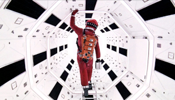

In what concerns the continuous evaluation solving exercises grade during the semester, you should submit until 23:59 of October 11th
(this exercise will still be available for submission after that deadline, but without couting towards your grade)
[to understand the context of this problem, you should read the class #01 exercise sheet]

The radio crackles, and Major Tom drifts weightlessly inside his capsule. Earth is a blue planet far behind him, and the stars shine silently all around. The farther he floats, the stranger he feels an odd sensation he cannot quite explain.As if reading his thoughts, Mission Control transmits a sequence of numbers. To them, it's just routine telemetry. But Major Tom interprets the message differently: to him, the odd numbers in the list resonate with his lonely strangeness, while the even numbers fade into the background like static in the void.
He wonders: how many odd signals are hidden in the transmission? And what is the last odd number he can cling to, before drifting deeper into the great unknown?
Your task is to help Major Tom decipher the message before he loses contact.
Given a sequence of positive integers, count how many of them are odd and output both that count and the last odd number in the sequence.
The first line contains a single integer N, the number of integers in the sequence.
The second line contains N space-separated integers ai, .
The output should be a line with two integers separated by a space:
If there are no odd numbers, output 0 -1.
The following limits are guaranteed in all the test cases that will be given to your program:
| 1 ≤ N ≤ 100 | Size of sequence | |
| 1 ≤ ai ≤ 109 | Numbers in the sequence |
| Example Input 1 | Example Output 1 |
5 42 17 8 23 100 |
2 23 |
There are two odd numbers (17 and 23) and the last one is 23.
| Example Input 2 | Example Output 2 |
4 2 4 6 8 |
0 -1 |
There are no odd numbers.